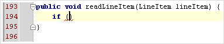
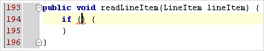

|
You can create code constructs using statement completion. Start typing a method declaration or a statement, and
press &shortcut:EditorChooseLookupItemCompleteStatement; after the opening parenthesis. The braces are created,
with the caret placed inside.
 After: |